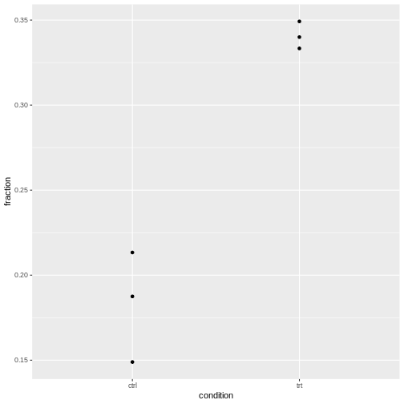

Modeling count data
Last updated on 2025-03-13 | Edit this page
Estimated time: 20 minutes
Overview
Questions
- What is a generalized linear model (GLM) and how can count data be represented with it?
- How can tests for association be implemented with GLMs?
- How can GLMs help to account for biological variance?
Objectives
- Provide a workflow for modeling count data with replicates.
NOTE: This episode is work in progress.
How to model fractions
Let’s consider the example from the previous lesson, and focus on the fractions of round cells in the control group only.
Remember that our data.frame with the counts looks like
this:
R
tidy_table
OUTPUT
replicate condition shape count
1 1 ctrl round 9
2 1 ctrl stretched 39
3 1 trt round 21
4 1 trt stretched 42
5 2 ctrl round 16
6 2 ctrl stretched 59
7 2 trt round 51
8 2 trt stretched 99
9 3 ctrl round 7
10 3 ctrl stretched 40
11 3 trt round 22
12 3 trt stretched 41OUTPUT
, , 1
[,1] [,2]
[1,] 9 39
[2,] 21 42
, , 2
[,1] [,2]
[1,] 16 59
[2,] 51 99
, , 3
[,1] [,2]
[1,] 7 40
[2,] 22 41We combine the counts from each replicate to calculate totals and observed fractions:
R
tidy_data <- tidy_table %>%
pivot_wider(
names_from = shape,
values_from = count
) %>%
mutate(total = round + stretched) %>%
mutate(fraction = round/total)
tidy_data
OUTPUT
# A tibble: 6 × 6
replicate condition round stretched total fraction
<chr> <chr> <dbl> <dbl> <dbl> <dbl>
1 1 ctrl 9 39 48 0.188
2 1 trt 21 42 63 0.333
3 2 ctrl 16 59 75 0.213
4 2 trt 51 99 150 0.34
5 3 ctrl 7 40 47 0.149
6 3 trt 22 41 63 0.349Then can extract the ctrl counts only:
R
ctrl_data <- tidy_data %>%
filter(condition == "ctrl")
ctrl_data
OUTPUT
# A tibble: 3 × 6
replicate condition round stretched total fraction
<chr> <chr> <dbl> <dbl> <dbl> <dbl>
1 1 ctrl 9 39 48 0.188
2 2 ctrl 16 59 75 0.213
3 3 ctrl 7 40 47 0.149We can model the fraction with a GLM of the binomial family:
R
glm.binom <- glm(cbind(round,stretched) ~ 1 ,
data= ctrl_data,
family= binomial("logit"))
coefficients(glm.binom)
OUTPUT
(Intercept)
-1.461518 Model formula: This GLM models fractions as a
function of the variables we supply behind the ~ sign in
the model formula. In our case, we didn’t give any variables, just an
intercept (denoted by 1). The intercept therefore
represents the fraction of round cells estimated from the data.
Logit link: Linear models assume that data are Gaussian distributed around their predictions. For fractional data, this is not the case. For this reason, the prediction happens on a logit-transformed level. We model
\[\mu = \text{logit}(X\beta)\],
where \(\mu\) is the predicted count, and \(X\beta\) is the linear predictor, a linear combination of the variables \(X\) and the coefficients \(\beta\) (including the intercept).
If all this doesn’t sound familiar to you, the important bit is that the coefficients that the GLM of a binomial family returns to us need to be transformed in order to be interpretable.
The logit of a probability \(p\) is given by \(\ln(\frac{p}{1-p})\). It’s also called the log odds.
The transformation from a value \(x\) on the logit scale to fractions is:
\[\text{fraction} = \frac{\exp(x)}{1 + \exp(x)}\] Let’s transform our intercept into a fraction:
R
x <- coefficients(glm.binom)
exp(x)/(1+exp(x))
OUTPUT
(Intercept)
0.1882353 We can compare this fraction with what we get by calculating a fraction from pooled counts:
R
sum(ctrl_data$round) / sum(ctrl_data$total)
OUTPUT
[1] 0.1882353We learn: The GLM of the binomial offers an alternative way to calculate fractions.
How to model odds ratios
Models are good for determining how observations depend on variables. Observations in our case are fractions, and a meaningful variable can be the treatment. We can add it in the model formula as shown below. We use the full data set, not the one filtered for control data only.
R
glm.binom.1var <- glm(cbind(round,stretched) ~ condition ,
data= tidy_data,
family= binomial("logit"))
This model gives us two coefficients:
R
coefficients(glm.binom.1var)
OUTPUT
(Intercept) conditiontrt
-1.4615178 0.8008059 Intercept is the logit-transformed fraction (log odds)
of round cells in the reference state, which is the ctrl
group. By default, R sets the reference state by alphabetical order, and
ctrl is before trt.conditiontrt is the coefficient which describes how the log
odds for being round change when the condition is
trt instead of ctrl.
We can combine the two coefficients in the linear predictor \(X\beta\) to calculate the fraction for treated cells.
R
xb <- sum(coefficients(glm.binom.1var))
exp(xb)/(1+exp(xb))
OUTPUT
[1] 0.3405797Let’s compare to the pooled fraction of round cells in the treatment condition:
R
trt_data <- tidy_data %>% filter(condition == "trt")
sum(trt_data$round) / sum(trt_data$total)
OUTPUT
[1] 0.3405797The conditiontrt coefficient can also be interpreted as
a log odds ratio. We can calculate the observed log odds ratio on pooled
data, which is given by
\(\log(\frac{n_{11} n_{22}}{n_{12}n_{21}})\).
Here is the estimate from the data:
R
observed_odds_ratio <- sum(ctrl_data$round) * sum(trt_data$stretched) / (sum(ctrl_data$stretched)* sum(trt_data$round))
observed_log_odds <- log(observed_odds_ratio)
observed_log_odds
OUTPUT
[1] -0.8008059It coincides with the conditiontrt coefficient with a
flipped sign:
R
coefficients(glm.binom.1var)[2]
OUTPUT
conditiontrt
0.8008059 If you exchange the first and second column of the table (or the first and second row), the log odds ratio will also flip sign.
Mathematical explanation
We know that
- the coefficient
Interceptgives the log odds for being round in the control condition: \(\text{Int}=\text{log odds}_{ctrl}\) - the sum of the coefficients
conditiontrtandInterceptgive the log odds ratio for being round in the treatment condition: \(\text{Intercept}+ \text{conditiontrt} = \text{log odds}_{trt}\)
Therefore the coefficient conditiontrt can be expressed
as
\[\text{conditiontrt} = \text{log odds}_{ctrl} - \text{log odds}_{trt} = log(\frac{odds_{ctrl}}{odds_{trt}})\] We learn that GLMs of the binomial family allow us to estimate odds ratios.
Connection to Chi-square / Fisher test
Set up pooled table:
R
pooled_table <- rbind(
c(sum(ctrl_data$round) , sum(ctrl_data$stretched)),
c(sum(trt_data$round) ,sum(trt_data$stretched))
)
pooled_table
OUTPUT
[,1] [,2]
[1,] 32 138
[2,] 94 182R
chisq.test(pooled_table, correct = FALSE)
OUTPUT
Pearson's Chi-squared test
data: pooled_table
X-squared = 12.046, df = 1, p-value = 0.0005192R
null_model <- glm(cbind(round,stretched) ~ 1 ,
data= tidy_data,
family= binomial("logit"))
R
anova(null_model, glm.binom.1var, test = "Rao")
OUTPUT
Analysis of Deviance Table
Model 1: cbind(round, stretched) ~ 1
Model 2: cbind(round, stretched) ~ condition
Resid. Df Resid. Dev Df Deviance Rao Pr(>Chi)
1 5 13.349
2 4 0.839 1 12.51 12.046 0.0005192 ***
---
Signif. codes: 0 '***' 0.001 '**' 0.01 '*' 0.05 '.' 0.1 ' ' 1Conclusion: A chi-square test is a special case of a
GLM. Testing for the parameter conditiontrt, which tells us
how different the fractions for control and treatment are, is the same
as testing for association of the variables condition and
morphology.
(See also here how to reproduce the result of a chi-square test with a GLM of the poisson family.)
How to add replicates
Let’s add the replicates to the model:
R
glm.binom.repl <- glm(cbind(round,stretched) ~ condition + replicate ,
data= tidy_data,
family= binomial("logit")
)
summary(glm.binom.repl)
OUTPUT
Call:
glm(formula = cbind(round, stretched) ~ condition + replicate,
family = binomial("logit"), data = tidy_data)
Coefficients:
Estimate Std. Error z value Pr(>|z|)
(Intercept) -1.47922 0.26630 -5.555 2.78e-08 ***
conditiontrt 0.79276 0.23468 3.378 0.00073 ***
replicate2 0.06314 0.26300 0.240 0.81027
replicate3 -0.03887 0.30841 -0.126 0.89972
---
Signif. codes: 0 '***' 0.001 '**' 0.01 '*' 0.05 '.' 0.1 ' ' 1
(Dispersion parameter for binomial family taken to be 1)
Null deviance: 13.3492 on 5 degrees of freedom
Residual deviance: 0.6751 on 2 degrees of freedom
AIC: 34.903
Number of Fisher Scoring iterations: 3This model estimates the fractions for each replicate separately. It say that the effect of the treatment is identical for all replicates (i.e. assumes homogeneous association), and calculates a separate effect of the replicate.
We can compare to the model that only considers the impact of the replicate on the fraction of round cells, but not of the condition.
R
glm.repOnly <- glm(cbind(round,stretched) ~ replicate ,
data= tidy_data,
family= binomial("logit")
)
R
anova(glm.repOnly, glm.binom.repl, test = "Rao")
OUTPUT
Analysis of Deviance Table
Model 1: cbind(round, stretched) ~ replicate
Model 2: cbind(round, stretched) ~ condition + replicate
Resid. Df Resid. Dev Df Deviance Rao Pr(>Chi)
1 3 12.8144
2 2 0.6751 1 12.139 11.703 0.0006239 ***
---
Signif. codes: 0 '***' 0.001 '**' 0.01 '*' 0.05 '.' 0.1 ' ' 1And we can compare to the Cochran-Mantel-Haenszel test.
R
mantelhaen.test(table3d)
OUTPUT
Mantel-Haenszel chi-squared test with continuity correction
data: table3d
Mantel-Haenszel X-squared = 10.895, df = 1, p-value = 0.000964
alternative hypothesis: true common odds ratio is not equal to 1
95 percent confidence interval:
0.2869095 0.7185351
sample estimates:
common odds ratio
0.4540424 We’ve seen three methods to answer the same question: Does the condition have an impact on the fraction of round cells, when controlling for the effect of the replicate (and assuming the replicate doesn’t have alter the effect of the condition)?
- Use a Wald test for the
conditiontrtcoefficient, given bysummary(glm.binom.repl). It yields a p-value of \(~0.0007\). - Compare the models with the formulae
~replicate(glm.repOnly) and~condition + replicate(glm.repl) using theanovafunction. This yields a p-value of \(~0.0006\). - Use the Cochran-Mantel-Haenszel test, which gives a p.value of \(~0.0009\).
We see that the methods are not identical, but give extremely similar results and lead to the same conclusion: When controlling for the replicate (stratifying the analysis), we seen a clear effect of the condition on the fraction of round cells.
Three-way interaction
If the model glm.binom.repl doesn’t fit well, this is
evidence that the replicate has an impact on the effect of the
treatment. Finally, we really need the GLM, because there is no
off-the-shelf test that we can apply to test for three-way
interaction.
A model with three-way interaction looks like this:
R
glm.threeway <- glm(cbind(round,stretched) ~ condition * replicate ,
data= tidy_data,
family= binomial("logit")
)
summary(glm.threeway)
OUTPUT
Call:
glm(formula = cbind(round, stretched) ~ condition * replicate,
family = binomial("logit"), data = tidy_data)
Coefficients:
Estimate Std. Error z value Pr(>|z|)
(Intercept) -1.4663 0.3698 -3.965 7.33e-05 ***
conditiontrt 0.7732 0.4563 1.695 0.0902 .
replicate2 0.1614 0.4650 0.347 0.7285
replicate3 -0.2766 0.5519 -0.501 0.6162
conditiontrt:replicate2 -0.1315 0.5633 -0.233 0.8154
conditiontrt:replicate3 0.3472 0.6677 0.520 0.6030
---
Signif. codes: 0 '***' 0.001 '**' 0.01 '*' 0.05 '.' 0.1 ' ' 1
(Dispersion parameter for binomial family taken to be 1)
Null deviance: 1.3349e+01 on 5 degrees of freedom
Residual deviance: -7.7716e-15 on 0 degrees of freedom
AIC: 38.228
Number of Fisher Scoring iterations: 3We see no evidence that the replicate has an impact on the odds
ratio, because the coefficients conditionttrt:replicate2
and conditiontrt:replicate3 are not significant.
How to check for overdispersion
We have three replicates, so for each condition, we have three observed fractions of round cells.
Let’s visualize this:
R
tidy_data %>%
ggplot(aes(x=condition, y=fraction))+
geom_point()
 It’s normal that for lower counts, the fractions are jumping around more. For eyeballing purposes, it’s therefore recommended to use stacked bar plots.
The question is whether the counts vary more than expected by a binomial model.
Intuitive approach
- Compare expected to observed variance and calculate a ratio of these
- don’t over-interpret, because we calculate this from 3 replicates only
- show exemplary for control
To be added: Source, or theory for this?
Determine overdispersion through model
Take the model without the replicate and check for overdispersion:
R
library(performance)
check_overdispersion(glm.binom.1var)
ERROR
Error: Package `DHARMa` required for this function to work.
Please install it by running `install.packages("DHARMa")`.Or the one with the replicate included:
R
check_overdispersion(glm.binom.repl)
ERROR
Error: Package `DHARMa` required for this function to work.
Please install it by running `install.packages("DHARMa")`.For our cell data, we are fine.